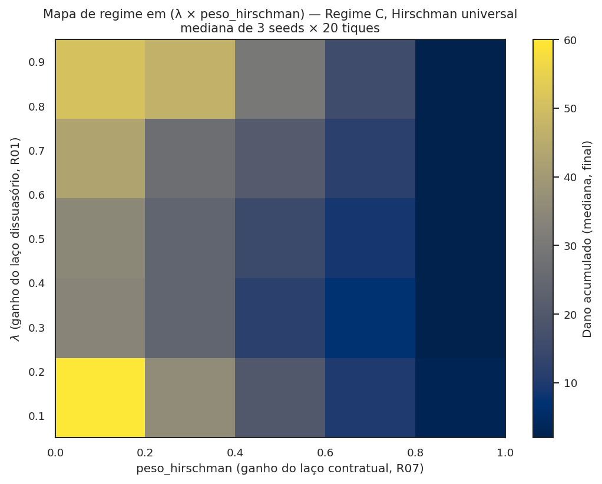

O modelo ABM em detalhe¶
Três classes de agente, ~40 parâmetros, 331 testes, opt-in por flag. Tudo inspecionável. Esta página é o guia completo para abrir o capô, ler, calibrar e quebrar.
| § | Seção | O que tem |
|---|---|---|
| §1 | A história em um parágrafo | Da formulação original v1 à correção v3 |
| §2 | Anatomia rápida | Três classes, fases P0-P5 e reporters |
| §3 | Tabela de ~40 parâmetros | WaaSParametros linha a linha, com defaults |
| §4 | Manipulabilidade + 7 receitas | Tabela de flags opt-in + Python para mudar regime, ativar escrow, varrer Sobol |
| §5 | 22 cenários canônicos | aplicar_cenario(base, nome) sem configuração manual |
| §6 | 38 reporters | As colunas do DataFrame agrupadas por categoria |
| §7 | Cookbook avançado | Calibração Saito, choques layoff, multi-seed CI, mapa λ×Hirschman |
| §8 | Postura epistêmica | Backward compat estrita; opt-in por flag |
Esta é a aba dedicada ao modelo computacional: o que é, como evoluiu, como se mexe nos parâmetros, como se lê a saída. Para a anatomia conceitual das 3 classes (Trabalhador, Empresa, Autoridade) e a discussão de "o que não é agente, e por quê", veja Modelagem multiagente. Para o protocolo ODD formal, veja Modelo (ODD).
1. A história do modelo, em um parágrafo¶
O modelo nasceu em 2022 como uma simulação simples de leniência clássica antitruste sob a Lei 12.529/2011 — duas firmas, sinalização Bayesiana, payoffs Beckerianos. A primeira reformulação radical (LCMC, R20) deslocou o eixo de "leniência entre cúmplices" para massa crítica intra-firma sob a tese do moat (mercados digitais → condutas unilaterais → conluio só existe dentro do organograma). A segunda (Coleman 1990, R26) abriu a hipótese de erosão endógena do substrato cooperativo. A terceira — a correção radical do autor em fim de sessão — moveu o coração do mecanismo para canal de depósito condicional (information escrow à la Ayres-Unkovic 2012; análogo Callisto). Coleman virou diagnóstico secundário; o canal virou tese central. Veja aprendizados v3 para a memória institucional desta trajetória.
O modelo atual implementa mecanicamente a versão correta (Phase P2 já é gating de massa crítica; P2.5 sob modo_corrida=True já implementa o escrow), mas a leitura semântica do código ainda está em refator (R27 aberto). Isso significa: a simulação produz hoje os resultados certos sob a tese correta, apenas com nomes de variáveis que carregam resquícios v1/v2.
2. Anatomia rápida¶
Três classes de agente¶
TrabalhadorAgent(agents.py:24) — agente rico, 13 métodos. Decide se sinaliza por uma de 6 regras (arquétipos): ético, imitativo, racional, aleatório, fairminded (R16), oportunista (R24). Estado: arquétipo, papel funcional, w_a (salário anual), anos de carreira, tolerância a represália, histórico de observação, status (ativo / ex-funcionário sob R19), posição na fila intra-firma sob LCMC.EmpresaAgent(agents.py:206) — agente reagente, 3 métodos. Temeh_violadora,conduta_potencial(uma das 28 do catálogo), fatia de mercado, severidade, cultura de conformidade, posição na fila inter-firma sob LCMC.AutoridadeAgent(agents.py:273) — agente único (CADE), com capacidade κ, acurácia ρ, prioridade digital opcional. Sob R27 futuro, será o portador do escrow de denúncias condicionais.
A rede intra-firma é Watts-Strogatz pequeno-mundo (NetworkX); a rede inter-firma é implícita (acoplamento por p_perc global, canal Schelling).
Estrutura de step() em 6 fases¶
P0 → dissuasão endógena (R01): atualiza p_perc, re-decide quem viola.
Camada Hirschman preventiva (R07) reduz g_i se firma tem cláusula.
P1 → cada trabalhador observa s_i = σ + ε_i; decide a_i ∈ {0, 1} pela
regra do seu arquétipo. Opt-in: usar_x_estrela_no_racional (R02a).
P2 → agregador conta Σ a_i na rede intra-firma; firma é notificada se ≥ k.
P2.5→ (opt-in modo_corrida) registra firma na FilaLeniencia se atingiu
q_min × n_trab; atribui posicao_fila_leniencia (LCMC, R20).
P3 → empresa decide pagar denunciantes via IC-F*; ramos: (a) simplificada;
(b) + Hirschman (D+exodo > W); (c) + LCMC (decaimento Saito).
P4 → autoridade recebe casos (capacidade κ); aplica acurácia ρ; sorteia
anulação se p_anulacao_tcc > 0 (Vetor B/F6).
P5 → coleta de estado (38 reporters → DataFrame).
Sob a tese corrigida v3, o AutoridadeAgent carrega explicitamente o escrow (R27, usar_escrow_explicito=True) e a expiração individual de cada depósito (R27-ii, janela_escrow_tiques). O caminho histórico (default False) preserva o escrow implícito em P2.5 — comportamento bit-a-bit idêntico.
38 reporters em 3 categorias semânticas¶
Os 38 reporters do DataCollector agrupam-se em:
- Massa crítica (substrato LCMC):
n_sinais,n_empresas_notif,n_firmas_atingiram_massa_critica_interna,n_violadoras_ativas,dano_acumulado,dano_economico_acum,valor_dissuasao_difusa_acum,capital_social_residual,hhi. - Instrumentos (uso dos cinco):
n_tcc_assinados,n_pagou,custo_recompensa_acum,custo_exodo_acum,custo_recompensa_corrida_acum,n_firmas_sob_ameaca_exodo,n_ex_funcionarios. - Robustez (vetores de quebra):
n_tcc_anulados,n_firmas_optaram_tcc_classico,n_firmas_quebraram_tcc,multa_arrecadada_acum,multa_descumprimento_acum,n_choques_*_aplicados.
A primeira categoria é o que importa para a tese central sob v3.
3. Tabela completa de parâmetros (WaaSParametros)¶
Tabela exaustiva agrupada por função semântica. Todos os parâmetros são keyword arguments em WaaSParametros(...). Defaults preservam backward compat estrita — mexer em um parâmetro não altera nenhum outro.
3.1 Tamanho do sistema¶
| Parâmetro | Tipo | Default | Faixa típica | O que controla |
|---|---|---|---|---|
n_empresas |
int | 20 | 4–100 | número de firmas simuladas (~CADE Brasil: 20-50) |
tam_medio_empresa |
int | 500 | 30–5 000 | trabalhadores por firma (~big tech BR média) |
n_tiques |
int | 40 | 5–100 | horizonte (1 tique = 1 trimestre; 40 = 10 anos) |
seed |
int | 42 | qualquer | semente RNG (multi-seed para CI) |
3.2 Mecanismo central (canal + instrumento WaaS)¶
| Parâmetro | Tipo | Default | Faixa | Função |
|---|---|---|---|---|
regime |
str | "B" |
"A"/"B"/"C" |
regime jurídico (A=status quo; B=Resolução; C=Lei) |
W_mult |
float | 1.5 | 0.5–5 | recompensa em múltiplos de salário anual |
k_rel |
float | 0.05 | 0.01–0.2 | massa crítica como fração de trabalhadores |
D_disc |
float | 0.30 | 0.1–0.5 | desconto total no TCC-WaaS |
D_disc_base_tcc |
float | 0.0 | 0.0–0.4 | desconto que o TCC clássico (Art. 85) já oferece (Vetor A) |
p_anulacao_tcc |
float | 0.0 | 0.0–1.0 | probabilidade de anulação judicial (Vetor B / F6) |
rho |
float | 0.7 | 0.5–0.95 | acurácia base da autoridade |
taxa_capacidade |
float | 0.5 | 0.1–1.0 | fração processável por tique (gargalo CADE) |
r_represalia |
float | 0.15 | 0.05–0.3 | probabilidade de represália |
F_falso |
float | 1.0 | 0.5–2.0 | penalidade por falso reporte (em w_a) |
densidade |
float | 0.10 | 0.02–0.3 | densidade Watts-Strogatz (rewiring) |
custo_legal_uw |
float | 0.0 | 0.0–0.5 | custo legal individual (Vetor C) |
3.3 LCMC e modo corrida (R20)¶
| Parâmetro | Tipo | Default | Faixa | Função |
|---|---|---|---|---|
modo_corrida |
bool | False |
True/False |
ativa Phase P2.5 + decaimento Saito |
q_min_cooperacao_interna |
float | 0.10 | 0.05–0.30 | fração mínima de cooperadores para massa crítica |
janela_temporal_tiques |
int | 4 | 2–10 | janela após massa crítica disparar |
perfil_decaimento |
str | "saito" |
"saito" |
perfil do gradiente (única opção implementada) |
3.4 Comportamentais (P0/P1)¶
| Parâmetro | Tipo | Default | Faixa | Função |
|---|---|---|---|---|
taxa_observacao |
float | 0.20 | 0.05–0.6 | probabilidade base de observar conduta |
taxa_falso_reporte |
float | 0.02 | 0.0–0.2 | probabilidade de reporte errôneo (R04) |
tau_ruido |
float | 0.10 | 0.05–0.5 | desvio-padrão do ruído ε_i no sinal privado |
sigma_etico |
float | 0.5 | 0.2–0.9 | limiar do arquétipo "ético" |
eta_aleatorio |
float | 0.05 | 0.0–0.2 | probabilidade do arquétipo "aleatório" |
peso_inequity_aversion |
float | 0.0 | 0.0–3.0 | α do Fehr-Schmidt no fairminded (R16) |
distribuicao_arquetipos |
dict|None | None |
dict somando 1.0 | dist. dos 6 arquétipos (None = Hokamp-Pickhardt clássica) |
distribuicao_papeis |
dict|None | None |
dict somando 1.0 | dist. dos 10 papéis (None = BIGTECH_MADURA) |
3.5 Vetores de quebra adicionais (R15 / R18)¶
| Parâmetro | Tipo | Default | Faixa | Função |
|---|---|---|---|---|
prob_pagamento_perc |
float | 1.0 | 0.5–1.0 | prob. percebida de firma pagar (Vetor D / R18) |
multa_descumprimento_tcc |
float | 0.0 | 0.0–3.0 | multa adicional se firma descumprir TCC |
p_descumprimento_tcc |
float | 0.0 | 0.0–0.5 | prob. de descumprimento pós-assinatura |
3.6 Hirschman exit-with-equity (R07)¶
| Parâmetro | Tipo | Default | Faixa | Função |
|---|---|---|---|---|
fracao_contratos_acelerados |
float | 0.0 | 0.0–1.0 | fração de firmas com cláusula (forçado a 0 em A/B) |
peso_hirschman |
float | 0.3 | 0.0–1.0 | peso do exit-threat no g_i preventivo |
valor_equity_por_funcionario_uw |
float | 0.5 | 0.2–1.5 | equity por trabalhador (em w_a; YC ref) |
fator_substituicao_uw |
float | 0.5 | 0.3–1.0 | custo recrutamento/onboarding (w_a) |
fracao_nao_vested |
float | 0.5 | 0.3–0.8 | fração não-vested (vesting 4y/1y cliff) |
aliquota_tributaria_vesting |
float | 0.0 | 0.0–0.5 | haircut IRPF+INSS no vesting BR |
3.7 Reframe v2/v3 (Eco B + Coleman)¶
| Parâmetro | Tipo | Default | Faixa | Função |
|---|---|---|---|---|
alpha_erosao |
float | 0.0 | 0.0–1.0 | erosão Coleman por uso instrumental (Vetor E / R26) |
3.8 R02a (jogo global no racional)¶
| Parâmetro | Tipo | Default | Função |
|---|---|---|---|
usar_x_estrela_no_racional |
bool | False |
substitui IR-W por limiar x* Morris-Shin |
3.9 Choques exógenos (R19, Eurace@Unibi)¶
| Parâmetro | Tipo | Default | Função |
|---|---|---|---|
choques |
tuple | () |
lista de Choque(tique, tipo, magnitude) |
fator_represalia_ex_funcionario |
float | 0.2 | multiplicador de r para ex-funcionários |
3.10 Heterogeneidade R14¶
| Parâmetro | Tipo | Default | Função |
|---|---|---|---|
peso_cultura_compliance |
float | 0.0 | ω em σ_ef = σ·(1 − ω·cultura) |
sigma_tolerancia_represalia |
float | 0.0 | desvio-padrão de tol_represalia (0 = homogêneo) |
prioridade_digital_autoridade |
float | 0.0 | eleva ρ da autoridade |
media_anos_carreira |
float | 3.0 | média da exponencial de anos_carreira |
3.11 Distribuição de fatia de mercado (R13a)¶
| Parâmetro | Tipo | Default | Faixa | Função |
|---|---|---|---|---|
distribuicao_fatia_mercado |
str | "uniforme" |
"uniforme"/"pareto"/"lognormal" |
dist. de fatias |
alpha_pareto |
float | 1.16 | 1.0–2.0 | parâmetro Pareto (1.16 = regra 80/20) |
sigma_lognormal |
float | 1.0 | 0.5–2.0 | parâmetro lognormal |
3.12 Calibração externa¶
| Parâmetro | Tipo | Default | Fonte |
|---|---|---|---|
w_a_base |
float | 180 000.0 | Brasscom 2024 |
R_por_trabalhador |
float | 1 500 000.0 | Brasscom 2024 |
p_deteccao_prior |
float | 0.15 | DEE/CADE proxy |
lambda_expectativa |
float | 0.3 | expectativa adaptativa (R01) |
alpha_beta_binomial |
float | 1.0 | prior Beta(α=1, β=5) — Mat A x10 v1 |
beta_beta_binomial |
float | 5.0 | idem |
fracao_violadoras |
float | 0.30 | calibrar contra Saito (R03) |
delta_leniencia |
float | 0.5 | parâmetro auxiliar — desuso |
4. Como alterar parâmetros — manipulabilidade + 7 receitas¶
4.0 Manipulabilidade — opt-in flags em uma tabela¶
Toda extensão do modelo entrou via flag opt-in com default que preserva o comportamento histórico bit-a-bit. A tabela documenta o que cada flag faz, o que é preciso para ativá-la, e qual figura do site visualiza o efeito:
Flag (WaaSParametros) |
Default | O que ativa | Visualização |
|---|---|---|---|
regime |
"B" |
A, B, C, EUA, UE (tags R28 resolvem em regime_declarado) |
12, 13, 18 |
modo_corrida |
False |
LCMC (R20): fila inter-firma + gradiente Saito intra-firma | 11 |
q_min_cooperacao_interna |
0.10 |
fração mínima de cooperadores p/ massa crítica intra-firma | 04, 11 |
janela_temporal_tiques |
4 |
janela após massa crítica para fila inter-firma fechar | — |
usar_escrow_explicito |
False |
R27: AutoridadeAgent.escrow_denuncias ativo |
11, 18 |
janela_escrow_tiques |
0 |
Δt de expiração do depósito condicional (0 = eterno) | — |
usar_x_estrela_no_racional |
False |
R02a: arquétipo racional decide via x* do jogo global |
09 |
alpha_erosao |
0.0 |
R26 Coleman: erosão do capital social residual | 05, 08, 10 |
peso_inequity_aversion |
0.0 |
R16 fairminded ativo (Fehr-Schmidt) | — |
peso_hirschman |
0.3 |
R07: desconto preventivo g_i pelo êxodo (Regime C) |
19 |
fracao_contratos_acelerados |
0.0 |
R07: vesting universal (forçado p/ 0 em A/B por reserva de lei) | — |
prob_pagamento_perc |
1.0 |
R18: probabilidade percebida de a firma pagar W | 13 |
p_descumprimento_tcc |
0.0 |
R18: prob. de a firma quebrar o TCC | — |
multa_descumprimento_tcc |
0.0 |
R18: sanção catastrófica adicional | — |
D_disc_base_tcc |
0.0 |
R15 Vetor A: desconto que TCC clássico já dá | 16 |
p_anulacao_tcc |
0.0 |
R15 Vetor B / F6: prob. de anulação judicial | 16 |
custo_legal_uw |
0.0 |
R15 Vetor C: custo legal individual do denunciante | 16 |
taxa_falso_reporte |
0.02 |
R04: prob. de reporte errôneo/malicioso | 15 |
distribuicao_arquetipos |
None |
preset c/ oportunista (R24) ou fairminded (R16) |
15, 18 |
distribuicao_papeis |
None |
BIGTECH_MADURA / MARKETPLACE_BR (R08, E05) |
17 |
distribuicao_fatia_mercado |
"uniforme" |
"pareto" com alpha_pareto (R13a) |
— |
choques |
() |
catálogos de choques.py (R19) — layoff, paradigmático, CADE |
— |
prioridade_digital |
0.0 |
R14 autoridade: especialização em mercados digitais | — |
Convenção: cada extensão tem (i) flag em WaaSParametros com default
"desligado"; (ii) teste de regressão que verifica equivalência bit-a-bit
com o caminho histórico; (iii) reporter novo no DataCollector quando
introduz estado observável. Backward compat estrita auditada por
teste, não documentada por boa-fé.
4.1 Mínimo viável¶
from waas_antitrust.model import WaaSModel, WaaSParametros
params = WaaSParametros(n_empresas=20, n_tiques=40, seed=42, regime="B")
df = WaaSModel(params).executar()
print(df[["tique", "n_sinais", "n_violadoras_ativas", "dano_acumulado"]].tail())
4.2 Forçar o Vetor A (TCC clássico já dá desconto)¶
# D_extra = D_disc − D_disc_base_tcc = 0.30 − 0.28 = 0.02 ⇒ IC-F* quase nunca satisfeita
m = WaaSModel(WaaSParametros(
n_empresas=20, n_tiques=40, seed=11, regime="B",
D_disc=0.30,
D_disc_base_tcc=0.28,
))
df = m.executar()
print(f"Firmas que escolheram TCC clássico: {df['n_firmas_optaram_tcc_classico'].max()}")
4.3 Ativar LCMC com modo_corrida (R20)¶
# Cenário canônico via catálogo (mais fácil)
from waas_antitrust.cenarios import aplicar_cenario
p = aplicar_cenario(
WaaSParametros(n_empresas=20, n_tiques=40, seed=11),
"cenario_corrida_leniencia",
)
df = WaaSModel(p).executar()
print(f"Firmas que atingiram massa crítica interna: "
f"{df['n_firmas_atingiram_massa_critica_interna'].max()}")
# Ou manualmente:
m = WaaSModel(WaaSParametros(
n_empresas=20, n_tiques=40, seed=11, regime="C",
modo_corrida=True,
q_min_cooperacao_interna=0.10,
janela_temporal_tiques=4,
perfil_decaimento="saito",
))
df = m.executar()
4.4 Cenário com 20% de oportunistas (R24)¶
from waas_antitrust.cenarios import DISTRIBUICAO_COM_OPORTUNISTAS
m = WaaSModel(WaaSParametros(
n_empresas=20, n_tiques=40, seed=11, regime="B",
distribuicao_arquetipos=DISTRIBUICAO_COM_OPORTUNISTAS,
taxa_falso_reporte=0.15,
))
df = m.executar()
print(f"Falsos positivos acumulados: {df['falsos_positivos_acum'].max()}")
print(f"TCCs anulados: {df['n_tcc_anulados'].max()}")
4.5 Erosão Coleman (R26) — Proposição 5 candidata¶
# Varredura de alpha_erosao em 4 valores
for alpha in (0.0, 0.1, 0.3, 0.7):
m = WaaSModel(WaaSParametros(
n_empresas=20, n_tiques=40, seed=11, regime="B",
fracao_violadoras=0.7, taxa_observacao=0.6,
alpha_erosao=alpha,
))
df = m.executar()
final = df["capital_social_residual"].iloc[-1]
dano = df["dano_acumulado"].max()
print(f"α={alpha:.1f}: capital_social_final={final:.3f}, dano={dano}")
4.6 Choques exógenos (R19) — layoffs tech 2022-2026¶
Hoje há cinco catálogos canônicos em choques.py. As ondas tech estão divididas por causalidade:
from waas_antitrust.choques import (
CHOQUES_TECH_2022_2024, # cíclica: overhiring + juros
CHOQUES_TECH_2024_2025_AI_RESTRUCTURING, # estrutural: IA-eficiência
)
# Comparar dois regimes de choque sob mesmo seed
for nome, catalogo in [
("cíclico", CHOQUES_TECH_2022_2024),
("AI-estrutural", CHOQUES_TECH_2024_2025_AI_RESTRUCTURING),
]:
m = WaaSModel(WaaSParametros(
n_empresas=20, n_tiques=40, seed=11, regime="B",
choques=catalogo,
))
df = m.executar()
print(f"{nome:13s}: ex-funcionários={df['n_ex_funcionarios'].iloc[-1]}, "
f"sinais={df['n_sinais'].sum()}")
Pesquisa de fundo (2026): 2022-2024 foi causalidade cíclica (overhiring pandêmico + aperto monetário); 2024-2025 é estrutural (IA-eficiência: ~40% das vagas eliminadas não são reabertas — AlixPartners 2025). O campo causa_declarada distingue as duas eras em Choque.
4.7 Customizar distribuicao_arquetipos arbitrária¶
# 50% ético, 50% racional — população idealmente cooperativa
populacao_ideal = {
"ético": 0.50,
"imitativo": 0.0,
"racional": 0.50,
"aleatório": 0.0,
"fairminded": 0.0,
"oportunista": 0.0,
}
m = WaaSModel(WaaSParametros(
n_empresas=20, n_tiques=40, seed=11, regime="B",
distribuicao_arquetipos=populacao_ideal,
))
df = m.executar()
A soma do dict precisa ser 1.0 (não validado em runtime, mas o rng.choice quebra silenciosamente se não for).
5. Atalho: 22 cenários canônicos¶
Em vez de configurar parâmetros manualmente, use aplicar_cenario(base, nome):
from waas_antitrust.cenarios import listar_cenarios, aplicar_cenario
for nome in listar_cenarios():
print(f" {nome}")
Os 22 cenários disponíveis (cada um é um conjunto pré-configurado de sobrescritas):
| Cenário | Eixo |
|---|---|
status_quo |
Regime A puro |
resolucao_pura |
Regime B (Res. CADE) |
resolucao_mais_portaria_mte |
B + portaria MTE |
lei_waas_pura |
Regime C |
lei_waas_com_fundo_honorarios |
C + fundo público de honorários |
lei_waas_com_vesting_padrao |
C + Hirschman (R07) |
mercado_digital_br_pareto |
C + fatia Pareto α=1.16 |
cenario_sancao_dura |
C + multa catastrófica (R18) |
cenario_corrida_leniencia |
C + LCMC plena (R20) |
apenas_massa_critica_observavel |
A + dispara notificada sem instrumento (Vetor F7) |
dois_instrumentos_acoplados |
C + WaaS + Hirschman + LCMC |
credito_tributario_puro |
C + crédito tributário (R22 stub) |
leniencia_criminal_individual |
C + leniência criminal (R23 stub) |
captura_processamento_cade |
B + taxa_capacidade=0.10 (gargalo CADE) |
uso_adversarial_oportunista |
B + 20% oportunistas (R24) |
eua_doj_atr_rewards_2025 |
Variante EUA — Regime C + faixa 15–30% (R28) |
ue_dma_whistleblower_tool_2024 |
Variante UE — Regime A + proteção horizontal sem recompensa (R28) |
apenas_canal_sem_instrumento |
Canal puro (R27-i) — Regime B + usar_escrow_explicito=True, sem instrumento monetário |
erosao_coleman_adversarial |
Falsificação R26 — resolucao_pura + alpha_erosao=0.5 |
cascata_adesao_progressiva |
Cascata R29 — Regime B + escrow explícito + janela_adesao_pos_abertura=10 + faixas 100/70/50/30/10% |
lcmc_global_coordenada |
LCMC global R30 — 6 firmas em 2 grupos multinacionais + usar_escrow_consolidado_grupo=True + coordenacao_internacional=0.6 |
lcmc_global_descoordenada |
Contrafactual R30 — mesma topologia mas sem consolidação nem amplificação Schelling |
6. A saída do modelo — 38 reporters¶
Após model.executar(), o DataFrame tem uma linha por tique e 38 colunas. Tabela resumida:
| Reporter | Tipo | Categoria | Quando relevante |
|---|---|---|---|
tique |
int | meta | sempre |
n_sinais |
int | massa crítica | sempre |
n_empresas_notif |
int | massa crítica | regimes B/C |
n_violadoras_ativas |
int | massa crítica | sempre |
dano_acumulado |
int | massa crítica | sempre |
dano_economico_acum |
float | massa crítica | sob distribuicao_fatia_mercado≠"uniforme" |
vp_tique, fp_tique, fn_tique |
int | massa crítica | sempre |
verdadeiros_positivos_acum |
int | massa crítica | sempre |
falsos_positivos_acum |
int | massa crítica | sempre |
falsos_negativos_acum |
int | massa crítica | sempre |
n_firmas_atingiram_massa_critica_interna |
int | massa crítica | sob modo_corrida=True |
valor_dissuasao_difusa_acum |
float | massa crítica | sob epsilon_dissuasao_difusa>0 |
capital_social_residual |
float | massa crítica | sob alpha_erosao>0 |
hhi |
float | massa crítica | concentração de mercado |
n_tcc_assinados |
int | instrumentos | regimes B/C |
n_pagou |
int | instrumentos | regimes B/C |
custo_recompensa_acum |
float | instrumentos | regimes B/C |
custo_exodo_acum |
float | instrumentos | sob fracao_contratos_acelerados>0 |
custo_recompensa_corrida_acum |
float | instrumentos | sob modo_corrida=True |
n_firmas_sob_ameaca_exodo |
int | instrumentos | sob Hirschman ativo |
n_ex_funcionarios |
int | instrumentos | sob choques layoff |
n_tcc_anulados |
int | robustez | sob p_anulacao_tcc>0 (Vetor B) |
n_firmas_optaram_tcc_classico |
int | robustez | sob D_disc_base_tcc>0 (Vetor A) |
n_firmas_quebraram_tcc |
int | robustez | sob p_descumprimento_tcc>0 |
multa_arrecadada_acum |
float | robustez | regimes B/C |
multa_descumprimento_acum |
float | robustez | sob R18 ativo |
n_choques_layoff_aplicados |
int | robustez | sob R19 |
n_choques_paradigmaticos_aplicados |
int | robustez | sob R19 |
regime |
str | meta | sempre |
7. Cookbook reprodutível — 6 receitas avançadas¶
Receita 1: reproduzir a figura 03 do site¶
Receita 2: multi-seed CI da Proposição 3¶
from waas_antitrust.robustez import bootstrap_ci
from waas_antitrust.model import WaaSModel, WaaSParametros
def dano_em(regime, seed):
p = WaaSParametros(n_empresas=20, n_tiques=40, seed=seed, regime=regime)
return int(WaaSModel(p).executar()["dano_acumulado"].max())
seeds = list(range(12))
diferencas = [dano_em("A", s) - dano_em("B", s) for s in seeds]
ci_low, ci_high = bootstrap_ci(diferencas, n_bootstrap=2000, alpha=0.05, seed=42)
print(f"CI 95% de dano(A) − dano(B): [{ci_low:.1f}, {ci_high:.1f}]")
assert ci_low > 0, "Proposição 3 quebrou — abra issue!"
Receita 3: inspecionar uma firma específica¶
m = WaaSModel(WaaSParametros(
n_empresas=4, n_tiques=10, seed=23, regime="B",
modo_corrida=True, fracao_violadoras=0.8, taxa_observacao=0.6,
))
m.executar()
# Trabalhadores
for t in m.trabalhadores_por_empresa[0][:5]:
print(f" {t.arquetipo:13s} papel={t.papel:9s} "
f"observou={t.observou} pos_corrida={t.posicao_corrida_interna}")
# Empresa
e = m.empresas[0]
print(f"firma 0: viola={e.eh_violadora}, conduta={e.conduta_potencial}, "
f"TCC={e.tcc_assinado}, massa_crítica_satisfeita="
f"{e.massa_critica_interna_satisfeita}")
Receita 4: calibrar contra dados externos¶
Edite src/waas_antitrust/calibracao/saito.py com sua mediana de TCCs preferida, mantendo fonte primária no docstring. Depois:
python scripts/calibrar.py --metrica dano_acumulado --seeds 12
# saída: resultados de grid search contra 3 alvos do ODD
Receita 5: varredura Sobol custom¶
from waas_antitrust.sobol import PROBLEMA_SOBOL_8D, executar_varredura
from waas_antitrust.sobol.analise import calcular_indices_replicado
# Pequena (validação)
df = executar_varredura(n_base=64, regime="B", n_replicas=5)
indices = calcular_indices_replicado(df, PROBLEMA_SOBOL_8D, metrica="bem_estar")
print(indices)
# Paper-grade (várias horas)
# $ waas-sobol --n-base 1024 --jobs -1 --out results/sobol_full.parquet
Receita 6: mapa de regime em (λ × peso_hirschman) — resposta ao Mat A¶
Os dois laços de retroalimentação do modelo — dissuasório (λ, R01) e contratual (peso_hirschman, R07) — poderiam, em tese, produzir bifurcações no acoplamento. O mapa empírico varre a grade e diagnostica:
python scripts/mapa_lambda_hirschman.py --grade 5 --seeds 11 23 37
# grava results/mapa_lambda_hirschman.parquet + docs/img/19_mapa_lambda_hirschman.png

peso_hirschman ≥ 0,8 zera o dano para qualquer λ. Sem evidência de transição abrupta nesta resolução (salto máximo entre células vizinhas = 26 contra amplitude total 58): o mapa empírico não acusa bifurcação; a análise formal (autovalores do jacobiano) segue como trabalho futuro.
8. Postura epistêmica¶
O modelo está em fase de polimento pré-submissão, não em desenvolvimento de feature nova. Backward compat estrita é invariante; opt-in via flag é regra. R27 (refator semântico do canal) está aberto para sub-rodada futura, mas não bloqueia o uso atual — o que está implementado mecanicamente corresponde à tese v3 corretamente.
Para abrir o capô: comece pelo arquivo src/waas_antitrust/model.py (~840 linhas, navegável); a sequência WaaSParametros → __init__ → step() cobre 80% do que importa. Para entender as decisões individuais, vá a src/waas_antitrust/agents.py::TrabalhadorAgent.decidir_sinal (~100 linhas, 6 branches por arquétipo).
O modelo é falsificável por construção. Toda alegação tem reporter associado; todo reporter tem teste; todo teste roda em ≤ 25s. Se você roda e a conclusão quebra, abra uma issue com o output. Isto é exatamente o que o projeto precisa.